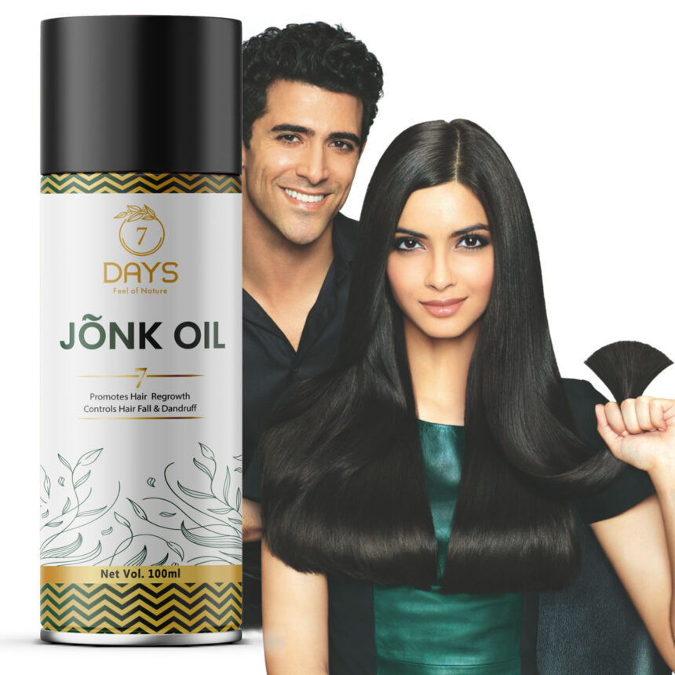

7 Days Jonk Oil (Leech Tel) for All Hair Problem (100 ml) $18
Factors such as lifestyle, underlying health issues, stress & a diet that lacks essential nutrients contribute to hair problems such as hair fall, dandruff, hair greying etc. But Jonk oil or leech oil has been found to be a miraculous therapy for all hair issues, especially hair fall. It has been found to support hair growth and even regrow hair by increasing blood circulation in bald patches, which makes it a popular remedy for conditions such as alopecia.